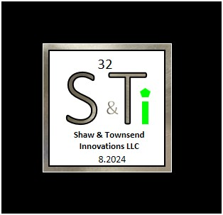
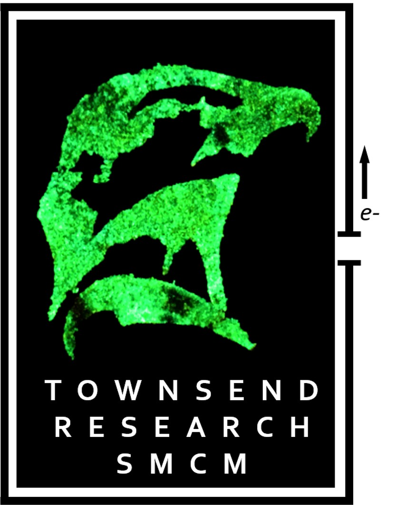
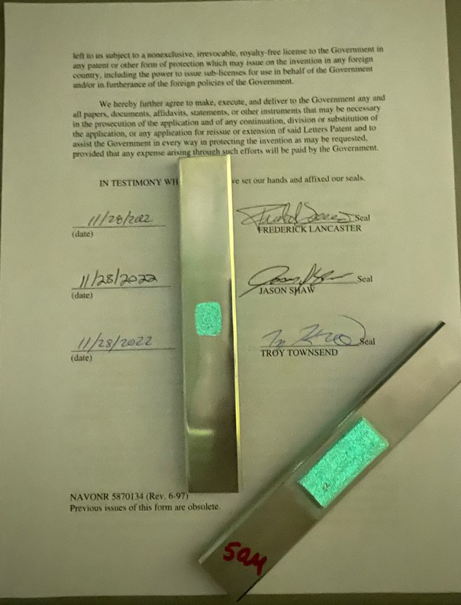
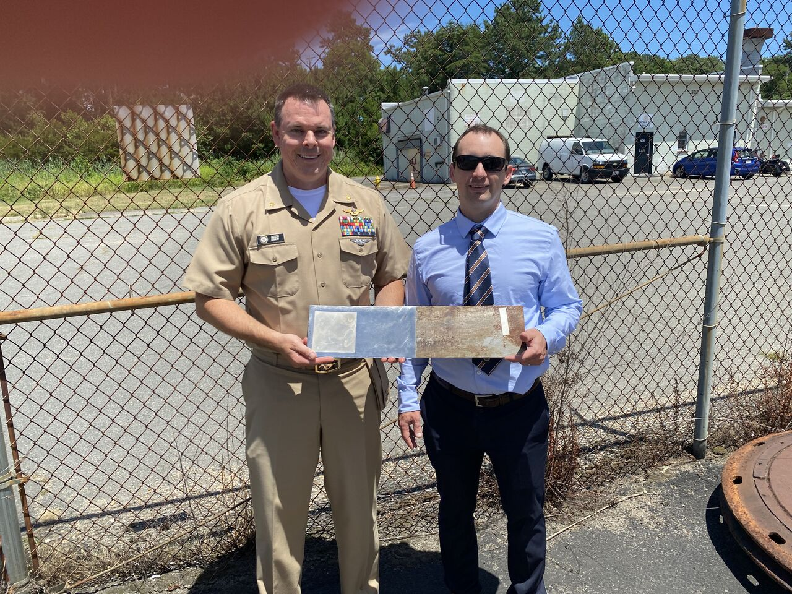
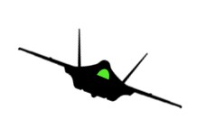
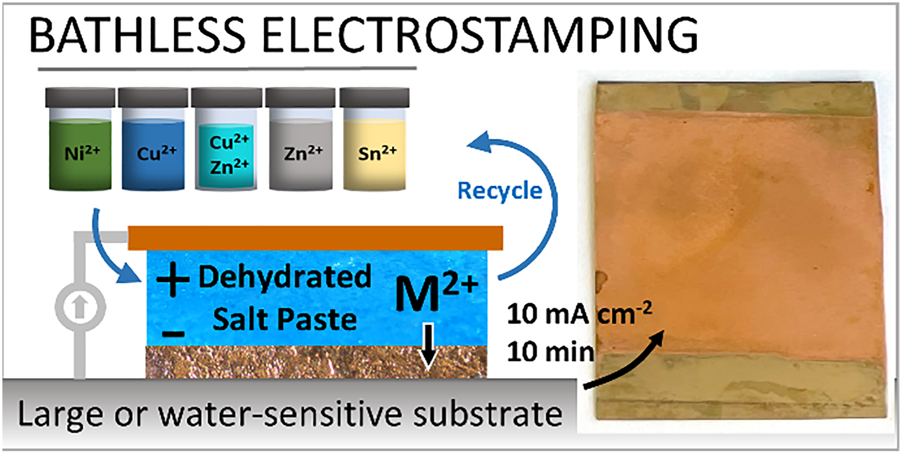

Materials Chemistry
Design and optimization of advanced metal coatings, composites, and surface treatments tailored to demanding aerospace and maritime environments.

Mission‑focused materials and maintenance solutions designed for high‑impact defense environments.
Design and optimization of advanced metal coatings, composites, and surface treatments tailored to demanding aerospace and maritime environments.
Protective systems that mitigate corrosion, extend asset life, and reduce sustainment costs, validated through side‑by‑side treated vs. untreated metal plate testing.

Electroplating processes and nanomaterial‑enhanced coatings that deliver durable, high‑adhesion surfaces with improved wear and fluid resistance.

Integration of Glow Powder technology into cold spray repair processes to enable visual inspection, safety verification, and mission readiness under UV illumination.

Full‑spectrum laboratory management, from test design and materials characterization to quality assurance and technology transition.

Reliability & maintainability analysis, innovative maintenance practices, and program management grounded in decades of Navy sustainment experience.

A professional, responsive team connected to an established network of defense and industry partners, delivering high‑impact projects with disciplined risk management.

Electrostamped metal coatings produced using dehydrated salt pastes, enabling bathless plating.
Our Recent Article we Published in Materials Advances (Royal Society of Chemistry), this research presents a new electrostamping technique that plates metals using viscous dehydrated salt pastes rather than a traditional liquid bath. This approach enables plating of large, irregular, or water‑sensitive workpieces while producing smooth crystalline deposits with high current efficiencies.
The study demonstrates electrostamping of Ni, Cu, Zn, Sn, and Cu|Zn brass alloys, with full characterization performed using optical microscopy, AFM, XRD, and XRF. These results support specialized applications in modern engineering, additive manufacturing, and aircraft sustainment.
Access the full article or download the PDF: